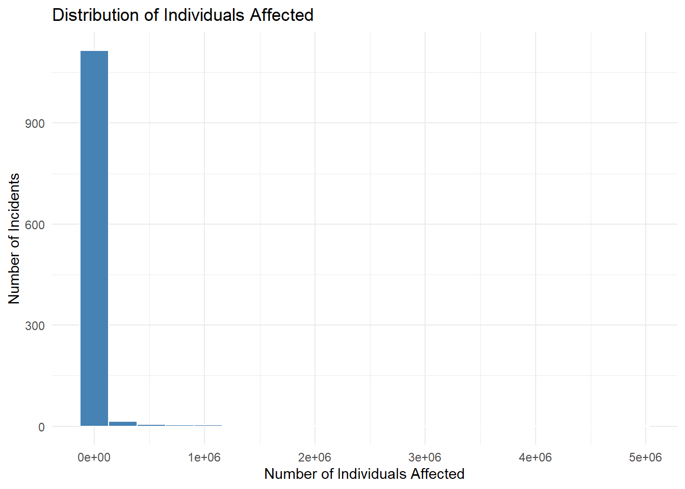
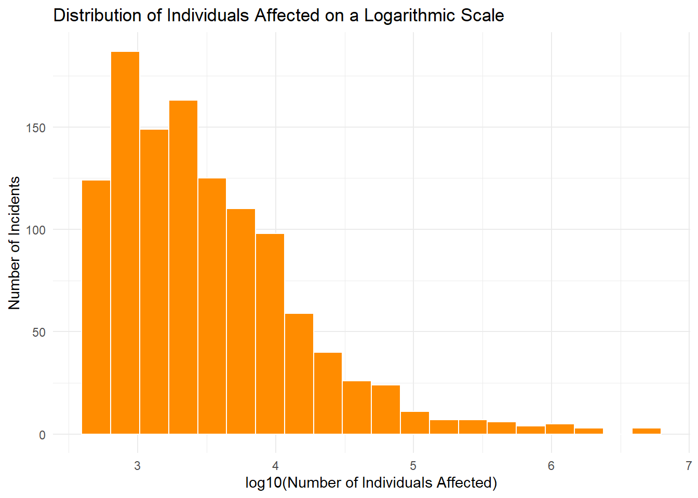
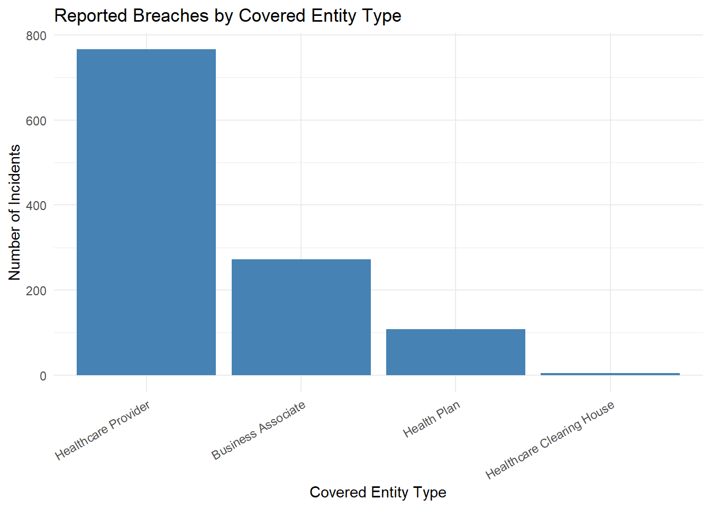
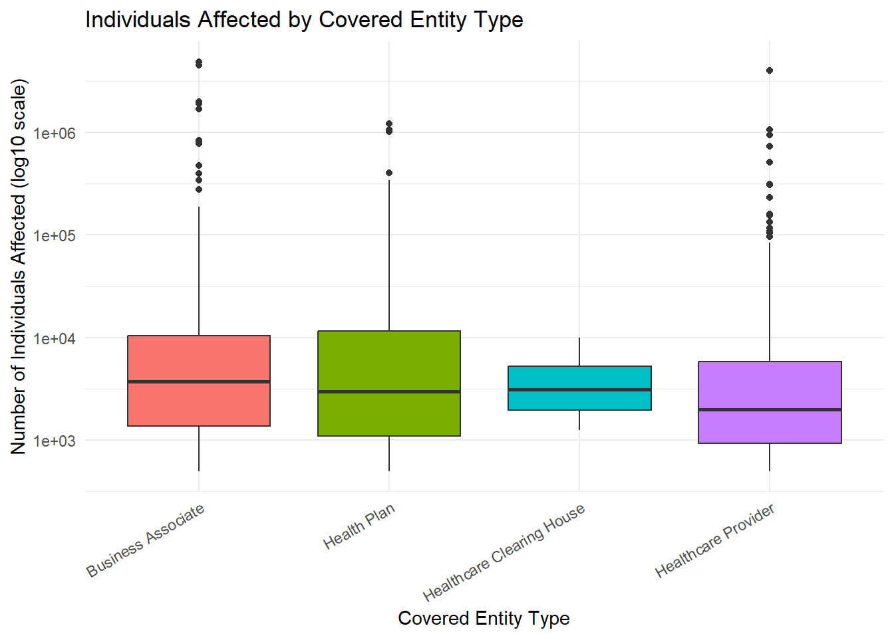
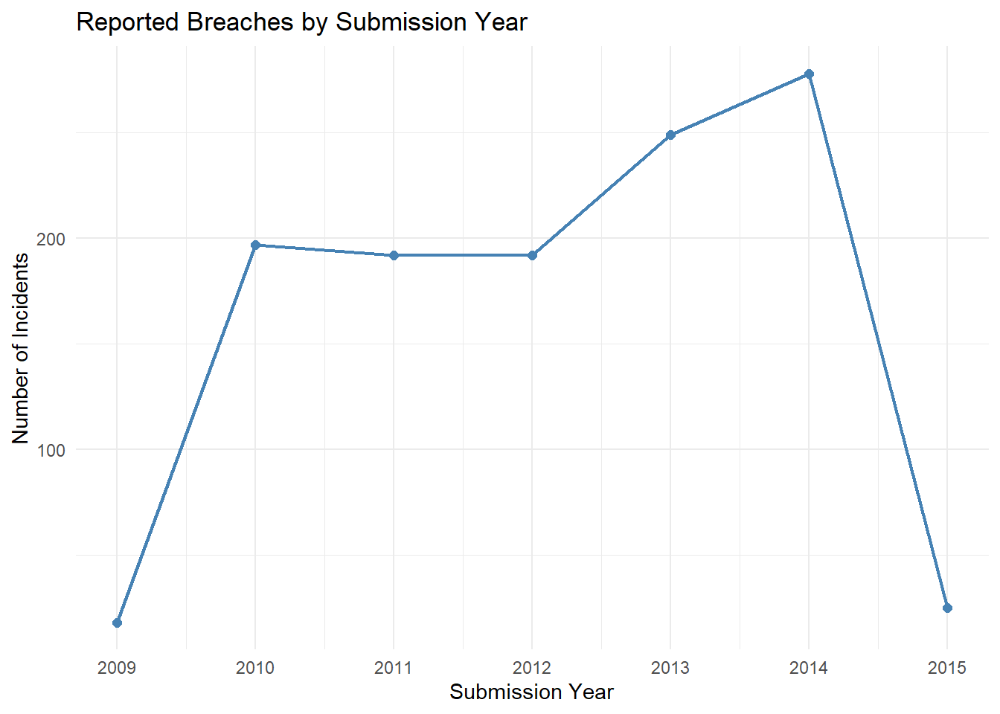

# Import needed packages
library(ggplot2)Homework 3 Solution
Part II. Exploratory Data Analysis (100 points)
In this part, we work on the cyber security breach report data downloaded 2015-02-26 from the US Health and Human Services.
To understand what the data represents, here is some information from the Office for Civil Rights of the U.S. Department of Health and Human Services:
- “As required by section 13402(e)(4) of the HITECH Act, the Secretary must post a list of breaches of unsecured protected health information affecting 500 or more individuals.
- “Since October 2009 organizations in the U.S. that store data on human health are required to report any incident that compromises the confidentiality of 500 or more patients / human subjects (45 C.F.R. 164.408). These reports are publicly available. Our data set was downloaded from the Office for Civil Rights of the U.S. Department of Health and Human Services, 2015-02-26.”
Load the data and save it as cyberData using the following code. The first column of the CSV file contains row identifiers, so it is imported as row names rather than as a data variable. The file also uses \N to represent missing values.
cyberData <- read.csv(
url("https://vincentarelbundock.github.io/Rdatasets/csv/Ecdat/HHSCyberSecurityBreaches.csv"),
row.names = 1,
na.strings = "\\N"
)Question 1. Understanding and Checking the Data (30 points)
(a) Check the structure of the data using the str command. What type of object is cyberData? How many observations are recorded? How many variables are recorded?List all of the types of variables that are recorded based on the output (i.e. int/float etc.). (7 points)
str(cyberData)'data.frame': 1151 obs. of 9 variables:
$ Name.of.Covered.Entity : chr "Brooke Army Medical Center" "Mid America Kidney Stone Association, LLC" "Alaska Department of Health and Social Services" "Health Services for Children with Special Needs, Inc." ...
$ State : chr "TX" "MO" "AK" "DC" ...
$ Covered.Entity.Type : chr "Healthcare Provider" "Healthcare Provider" "Healthcare Provider" "Health Plan" ...
$ Individuals.Affected : int 1000 1000 501 3800 5257 857 6145 952 5166 5900 ...
$ Breach.Submission.Date : chr "2009-10-21" "2009-10-28" "2009-10-30" "2009-11-17" ...
$ Type.of.Breach : chr "Theft" "Theft" "Theft" "Loss" ...
$ Location.of.Breached.Information: chr "Paper/Films" "Network Server" "Other, Other Portable Electronic Device" "Laptop" ...
$ Business.Associate.Present : logi FALSE FALSE FALSE FALSE FALSE FALSE ...
$ Web.Description : chr "A binder containing the protected health information (PHI) of up to 1,272 individuals was stolen from a staff m"| __truncated__ "Five desktop computers containing unencrypted electronic protected health information (e-PHI) were stolen from "| __truncated__ NA "A laptop was lost by an employee while in transit on public transportation. The computer contained the protect"| __truncated__ ...
cyberDatais a data frame with 1,151 observations and 9 variables. Most variables are stored as character variables,Individuals.Affectedis an integer variable, andBusiness.Associate.Presentis a logical variable.Breach.Submission.Dateis initially stored as a character variable rather than as a date.
(b) Examine the missing values in the data. For each variable, report both the number and the percentage of missing values. Which variable has the largest percentage of missing values? (8 points)
missing.count <- colSums(is.na(cyberData))
missing.percent <- 100 * missing.count / nrow(cyberData)
missing.summary <- data.frame(
Variable = names(cyberData),
Missing = as.numeric(missing.count),
Percent.Missing = round(as.numeric(missing.percent), 2)
)
missing.summary Variable Missing Percent.Missing
1 Name.of.Covered.Entity 0 0.0
2 State 0 0.0
3 Covered.Entity.Type 0 0.0
4 Individuals.Affected 0 0.0
5 Breach.Submission.Date 0 0.0
6 Type.of.Breach 0 0.0
7 Location.of.Breached.Information 0 0.0
8 Business.Associate.Present 0 0.0
9 Web.Description 892 77.5
Web.Descriptionhas the largest percentage of missing values: 942 of the 1,151 observations, or approximately 81.84%. The other variables do not contain missing values.
(c) Use the table function to display the frequencies of the values in Type.of.Breach. How many observations are recorded exactly as "Hacking/IT Incident"? (5 points)
breach.table <- table(cyberData$Type.of.Breach)
breach.table
Hacking/IT Incident
77
Hacking/IT Incident, Other
2
Hacking/IT Incident, Other, Unauthorized Access/Disclosure
1
Hacking/IT Incident, Theft
1
Hacking/IT Incident, Theft, Unauthorized Access/Disclosure
3
Hacking/IT Incident, Unauthorized Access/Disclosure
10
Improper Disposal
42
Improper Disposal, Loss
3
Improper Disposal, Loss, Theft
3
Improper Disposal, Theft, Unauthorized Access/Disclosure
1
Improper Disposal, Unauthorized Access/Disclosure
2
Loss
79
Loss, Other
2
Loss, Other, Theft
1
Loss, Theft
15
Loss, Unauthorized Access/Disclosure
5
Loss, Unauthorized Access/Disclosure, Unknown
1
Loss, Unknown
2
Other
89
Other, Theft
5
Other, Theft, Unauthorized Access/Disclosure
2
Other, Unauthorized Access/Disclosure
7
Other, Unknown
2
Theft
577
Theft, Unauthorized Access/Disclosure
24
Theft, Unauthorized Access/Disclosure, Unknown
1
Unauthorized Access/Disclosure
183
Unauthorized Access/Disclosure
1
Unknown
10 breach.table["Hacking/IT Incident"]Hacking/IT Incident
77 There are 77 observations recorded exactly as
"Hacking/IT Incident".
(d) What type of breach is reported in the 748th row of cyberData? How about the 349th row? Was row 349 included in the number of Hacking/IT incidents computed in part (c)? Explain why or why not. (5 points)
cyberData$Type.of.Breach[c(748, 349)][1] "Loss, Theft"
[2] "Hacking/IT Incident, Unauthorized Access/Disclosure"Row 748 is recorded as
"Loss, Theft", and row 349 is recorded as"Hacking/IT Incident, Unauthorized Access/Disclosure". Row 349 was not included in the count from part (c), becausetable()treats the complete string as one category. It does not automatically recognize Hacking/IT as one component of a combined category.
(e) Some observations contain more than one breach type separated by a comma. Use strsplit() to separate the breach types, and then find the correct total number of incidents involving Hacking/IT. (5 points)
breach.types <- strsplit(cyberData$Type.of.Breach, ", ")
breach.types <- trimws(unlist(breach.types))
individual.type.table <- table(breach.types)
individual.type.tablebreach.types
Hacking/IT Incident Improper Disposal
94 51
Loss Other
111 111
Theft Unauthorized Access/Disclosure
633 241
Unknown
16 individual.type.table["Hacking/IT Incident"]Hacking/IT Incident
94 After the combined categories are separated, 94 incidents involve Hacking/IT. The ordinary frequency table in part (c) missed 17 incidents in which Hacking/IT appeared together with another breach type.
Question 2. Exploring Individuals.Affected (25 points)
(a) Create a histogram of Individuals.Affected using 20 bins. Include an informative title and appropriate axis labels. Describe the shape of the distribution. (6 points)
ggplot(cyberData, aes(x = Individuals.Affected)) +
geom_histogram(bins = 20, color = "white", fill = "steelblue") +
labs(
title = "Distribution of Individuals Affected",
x = "Number of Individuals Affected",
y = "Number of Incidents"
) +
theme_minimal()
The distribution is strongly right-skewed. Most incidents affected relatively few individuals, while a small number of incidents affected several million individuals. These extreme observations compress most of the histogram into the left side of the graph.
(b) Calculate the mean, median, standard deviation, minimum, and maximum of Individuals.Affected. Explain why the mean and median are substantially different. (6 points)
x <- cyberData$Individuals.Affected
c(
Mean = mean(x),
Median = median(x),
Standard.Deviation = sd(x),
Minimum = min(x),
Maximum = max(x)
) Mean Median Standard.Deviation Minimum
35778.58 2365.00 263402.81 500.00
Maximum
4900000.00 The mean = 35,778.58, median = 2,365, standard deviation = 263,402.81, minimum = 500, and maximum = 4,900,000. The mean is much larger than the median because a few extremely large incidents pull the mean upward. The median is more representative of a typical incident in this strongly right-skewed distribution.
(c) Identify the three incidents with the largest values of Individuals.Affected. For each incident, report the covered entity, state, breach type, and number of individuals affected. (6 points)
top.three <- cyberData[order(cyberData$Individuals.Affected, decreasing = TRUE), ]
top.three[1:3, c(
"Name.of.Covered.Entity",
"State",
"Type.of.Breach",
"Individuals.Affected"
)] Name.of.Covered.Entity
385 Science Applications International Corporation (SA
1041 Community Health Systems Professional Services Corporation
746 Advocate Health and Hospitals Corporation, d/b/a Advocate Medical Group
State Type.of.Breach Individuals.Affected
385 VA Loss 4900000
1041 TN Theft 4500000
746 IL Theft 4029530The three largest incidents are
Science Applications International Corporation (SAin Virginia (Loss; 4,900,000), Community Health Systems Professional Services Corporation in Tennessee (Theft; 4,500,000), and Advocate Health and Hospitals Corporation, d/b/a Advocate Medical Group in Illinois (Theft; 4,029,530). The first entity name appears to be truncated in the source data and is reported here exactly as recorded.
(d) Create a second histogram using a base-10 logarithmic scale for Individuals.Affected. Again, use 20 bins and include an informative title and appropriate axis labels. Compare this graph with the histogram in part (a). Which graph makes the overall distribution easier to examine, and why? (7 points)
cyberData$Log10.Individuals.Affected <- log10(cyberData$Individuals.Affected)
ggplot(cyberData, aes(x = Log10.Individuals.Affected)) +
geom_histogram(bins = 20, color = "white", fill = "darkorange") +
labs(
title = "Distribution of Individuals Affected on a Logarithmic Scale",
x = "log10(Number of Individuals Affected)",
y = "Number of Incidents"
) +
theme_minimal()
The histogram of the log-transformed values makes the overall distribution easier to examine. It spreads out the smaller and moderate observations while reducing the visual influence of the few extremely large incidents. The transformed distribution is still not perfectly symmetric, but its structure is much clearer than it was on the original scale.
Question 3. Comparing Groups (25 points)
(a) Create a frequency table for Covered.Entity.Type. Then create an appropriate bar chart displaying the same frequencies. Order the categories from the largest to the smallest frequency, and include an informative title and appropriate axis labels. (8 points)
entity.frequency <- sort(table(cyberData$Covered.Entity.Type), decreasing = TRUE)
entity.frequency
Healthcare Provider Business Associate Health Plan
767 272 108
Healthcare Clearing House
4 entity.frequency.df <- data.frame(
Covered.Entity.Type = factor(
names(entity.frequency),
levels = names(entity.frequency)
),
Frequency = as.numeric(entity.frequency)
)
ggplot(entity.frequency.df,
aes(x = Covered.Entity.Type, y = Frequency)) +
geom_col(fill = "steelblue") +
labs(
title = "Reported Breaches by Covered Entity Type",
x = "Covered Entity Type",
y = "Number of Incidents"
) +
theme_minimal() +
theme(axis.text.x = element_text(angle = 30, hjust = 1))
Healthcare Providers account for the largest number of reported incidents (767), followed by Business Associates (272), Health Plans (108), and Healthcare Clearing Houses (4).
(b) For each value of Covered.Entity.Type, calculate the number of incidents and the median number of individuals affected. Present the results in a clearly labeled table. Which entity type has the largest median? (8 points)
entity.count <- aggregate(
Individuals.Affected ~ Covered.Entity.Type,
data = cyberData,
FUN = length
)
entity.median <- aggregate(
Individuals.Affected ~ Covered.Entity.Type,
data = cyberData,
FUN = median
)
names(entity.count)[2] <- "Number.of.Incidents"
names(entity.median)[2] <- "Median.Individuals.Affected"
entity.summary <- merge(entity.count, entity.median,
by = "Covered.Entity.Type")
entity.summary <- entity.summary[
order(entity.summary$Median.Individuals.Affected, decreasing = TRUE),
]
entity.summary Covered.Entity.Type Number.of.Incidents Median.Individuals.Affected
1 Business Associate 272 3730.5
3 Healthcare Clearing House 4 3252.0
2 Health Plan 108 3000.0
4 Healthcare Provider 767 2000.0Business Associates have the largest median number of individuals affected: 3,730.5. The remaining medians are 3,252 for Healthcare Clearing Houses, 3,000 for Health Plans, and 2,000 for Healthcare Providers. The Healthcare Clearing House result should be interpreted cautiously because it is based on only four incidents.
(c) Create side-by-side boxplots to compare Individuals.Affected across the different values of Covered.Entity.Type. Use a logarithmic scale for the numerical axis so that the distributions can be seen more clearly. Describe one meaningful pattern and one limitation of this comparison. (9 points)
ggplot(cyberData,
aes(x = Covered.Entity.Type,
y = Individuals.Affected,
fill = Covered.Entity.Type)) +
geom_boxplot(show.legend = FALSE) +
scale_y_log10() +
labs(
title = "Individuals Affected by Covered Entity Type",
x = "Covered Entity Type",
y = "Number of Individuals Affected (log10 scale)"
) +
theme_minimal() +
theme(axis.text.x = element_text(angle = 30, hjust = 1))
Business Associates have a higher median than Healthcare Providers, although the distributions overlap considerably. One important limitation is the extremely unequal group sizes. In particular, only four Healthcare Clearing House incidents were reported, so its boxplot does not provide a stable representation of that group.
Question 4. Changes Over Time (10 points)
Convert Breach.Submission.Date to a date variable and create a new variable containing the submission year. Then calculate the number of reported incidents in each year and display the results in an appropriate graph. Describe the overall pattern. Remember that the data for 2015 cover only part of the year.
cyberData$Breach.Submission.Date <- as.Date(cyberData$Breach.Submission.Date)
cyberData$Submission.Year <- as.integer(
format(cyberData$Breach.Submission.Date, "%Y")
)
year.frequency <- as.data.frame(table(cyberData$Submission.Year))
names(year.frequency) <- c("Year", "Number.of.Incidents")
year.frequency$Year <- as.integer(as.character(year.frequency$Year))
year.frequency Year Number.of.Incidents
1 2009 18
2 2010 197
3 2011 192
4 2012 192
5 2013 249
6 2014 278
7 2015 25ggplot(year.frequency,
aes(x = Year, y = Number.of.Incidents)) +
geom_line(linewidth = 0.8, color = "steelblue") +
geom_point(size = 2, color = "steelblue") +
scale_x_continuous(breaks = year.frequency$Year) +
labs(
title = "Reported Breaches by Submission Year",
x = "Submission Year",
y = "Number of Incidents"
) +
theme_minimal()
The number of reported incidents was 18 in 2009, 197 in 2010, 192 in both 2011 and 2012, 249 in 2013, and 278 in 2014. The 2015 count is only 25 because the data end on February 26, 2015, so it should not be compared directly with the counts for complete years. Among the complete years shown, the number of reports generally increased after 2012.
Question 5. EDA Summary (10 points)
Write a short paragraph summarizing three important findings from your exploratory analysis. Each finding must be supported by a numerical result or a visualization produced in this homework. Also state one question about the data that you would investigate next. Do not make causal claims based only on this exploratory analysis.
The number of individuals affected is strongly right-skewed: the median is only 2,365, while the mean is approximately 35,779 because several incidents affected millions of individuals. Healthcare Providers account for most of the reported incidents (767 of 1,151), but Business Associates have the largest median number of individuals affected (3,730.5), showing that frequency and typical incident size are different characteristics. The number of reports also increased from 192 in 2012 to 278 in 2014, although this exploratory pattern alone does not establish the cause of the increase. One useful next question would be whether the distribution of breach types changed over time.